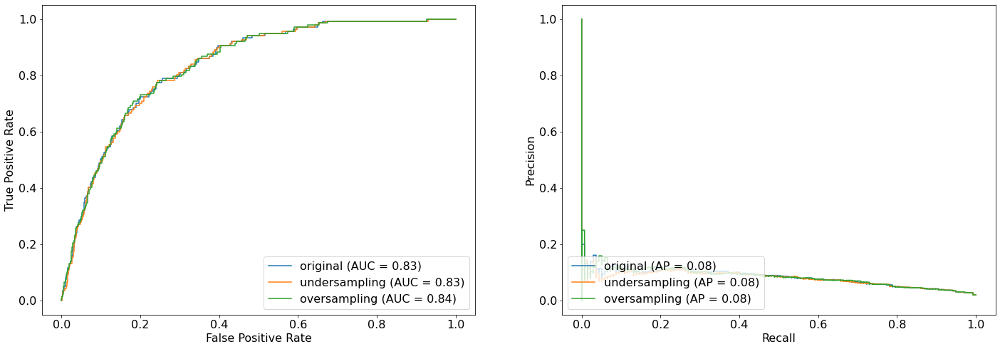
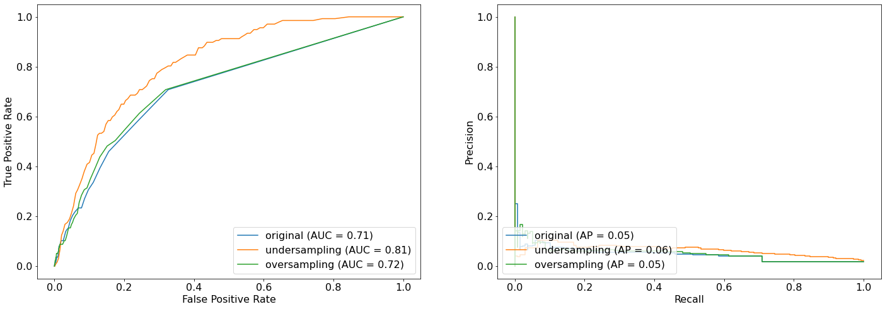
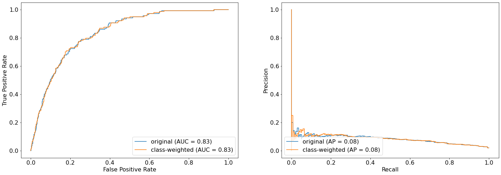
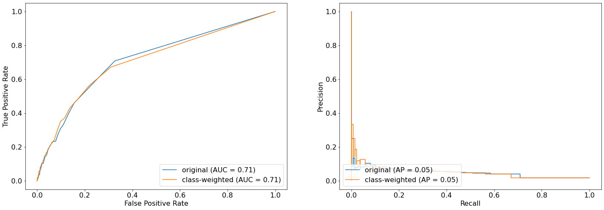
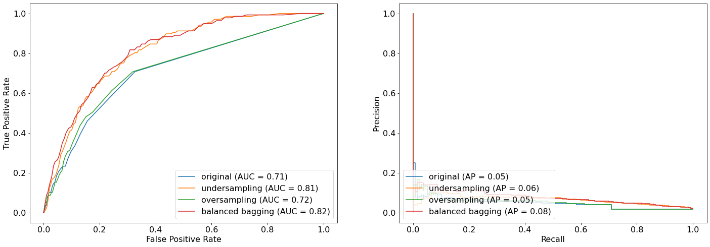
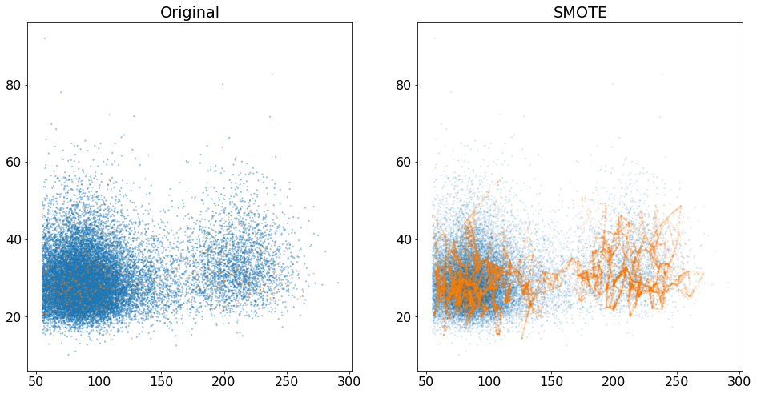
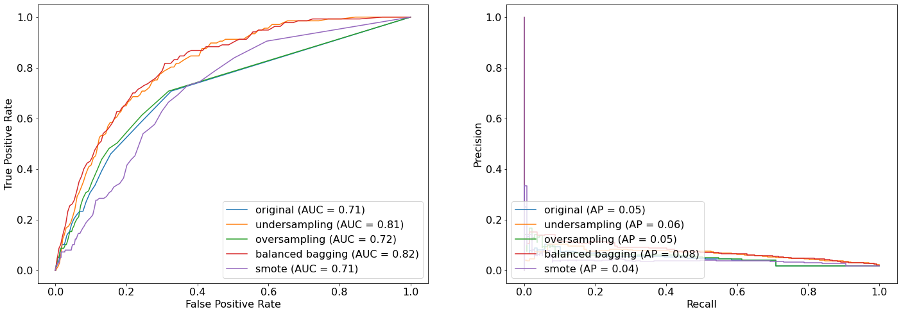
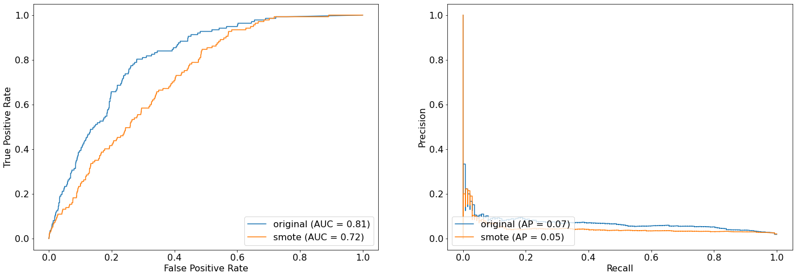

#code adapted from https://github.com/thomasjpfan/ml-workshop-advancedimport sklearn
import numpy as np
import pandas as pd
import matplotlib.pyplot as plt
plt.rcParams['font.size'] = 16
plt.rcParams['figure.figsize'] = [12, 8]
sklearn.set_config(display='diagram')Load Mammography Data
# %load solutions/classifier_example.py
from sklearn.preprocessing import StandardScaler
from sklearn.linear_model import LogisticRegression
from sklearn.pipeline import Pipeline
from sklearn.model_selection import train_test_split
url = 'https://raw.githubusercontent.com/davidrkearney/colab-notebooks/main/datasets/strokes_training.csv'
df = pd.read_csv(url, error_bad_lines=False)
df
df=df.dropna()
df.isnull().sum()
df.columns
sklearn.set_config(display='diagram')
X, y = df.drop(['stroke', 'id'], axis = 1), df['stroke']
X = X.select_dtypes(include='number')
X
X_train, X_test, y_train, y_test = train_test_split(X, y, random_state=42)
from sklearn.ensemble import RandomForestClassifier
from sklearn.metrics import classification_report
rf = RandomForestClassifier(random_state=42)
rf.fit(X_train, y_train)
rf.score(X_test, y_test)
y_pred = rf.predict(X_test)
print(classification_report(y_test, y_pred)) precision recall f1-score support
0 0.98 1.00 0.99 7139
1 0.17 0.01 0.01 129
accuracy 0.98 7268
macro avg 0.57 0.50 0.50 7268
weighted avg 0.97 0.98 0.97 7268
from sklearn.datasets import fetch_openmlnp.bincount(y)array([28524, 548])Split data into train test split
from sklearn.model_selection import train_test_split
X_train, X_test, y_train, y_test = train_test_split(
X, y, stratify=y, random_state=0)Base models
Linear model
from sklearn.model_selection import cross_validate
from sklearn.linear_model import LogisticRegressionbase_log_reg = LogisticRegression(random_state=42)
cv_results = cross_validate(base_log_reg,
X_train, y_train, scoring=['roc_auc', 'average_precision'])cv_results{'fit_time': array([0.18456721, 0.18922424, 0.21849942, 0.16009235, 0.14718604]),
'score_time': array([0.02156591, 0.01044083, 0.00906014, 0.00876856, 0.00877857]),
'test_roc_auc': array([0.85926447, 0.82782335, 0.83645313, 0.82829213, 0.82486117]),
'test_average_precision': array([0.08657556, 0.08525184, 0.10518971, 0.0796069 , 0.08259916])}log_reg_base_auc = cv_results['test_roc_auc'].mean()
log_reg_base_auc0.8353388498771366log_reg_base_ap = cv_results['test_average_precision'].mean()
log_reg_base_ap0.08784463474925555def compute_metrics(estimator):
cv_results = cross_validate(estimator,
X_train, y_train, scoring=['roc_auc', 'average_precision'])
return {
"auc": cv_results["test_roc_auc"].mean(),
"average_precision": cv_results["test_average_precision"].mean(),
}base_log_reg_metrics = compute_metrics(base_log_reg)
base_log_reg_metrics{'auc': 0.8353388498771366, 'average_precision': 0.08784463474925555}Random Forest
from sklearn.ensemble import RandomForestClassifierbase_rf = RandomForestClassifier(random_state=42, n_jobs=-1)base_rf_metrics = compute_metrics(base_rf)
base_rf_metrics{'auc': 0.7132260944197908, 'average_precision': 0.04824294956894796}Imbalance-learn sampler
Under sampler
np.bincount(y_train)array([21393, 411])from imblearn.under_sampling import RandomUnderSamplerunder_sampler = RandomUnderSampler(random_state=42)X_train_subsample, y_train_subsample = under_sampler.fit_resample(X_train, y_train)X_train.shape(21804, 5)X_train_subsample.shape(822, 5)np.bincount(y_train_subsample)array([411, 411])Oversampling
from imblearn.over_sampling import RandomOverSamplerover_sampler = RandomOverSampler(random_state=42)X_train_subsample, y_train_subsample = over_sampler.fit_resample(X_train, y_train)X_train_subsample.shape(42786, 5)np.bincount(y_train_subsample)array([21393, 21393])Pipelines with imblean
Linear model with under sampling
from imblearn.pipeline import make_pipeline as make_imb_pipelineunder_log_reg = make_imb_pipeline(
RandomUnderSampler(random_state=42), LogisticRegression(random_state=42))base_log_reg_metrics{'auc': 0.8353388498771366, 'average_precision': 0.08784463474925555}compute_metrics(under_log_reg){'auc': 0.8347615373366913, 'average_precision': 0.08779628352835236}Random Forest with under sampling
under_rf = make_imb_pipeline(
RandomUnderSampler(random_state=42), RandomForestClassifier(random_state=42))base_rf_metrics{'auc': 0.7132260944197908, 'average_precision': 0.04824294956894796}compute_metrics(under_rf){'auc': 0.7930356061088476, 'average_precision': 0.0634524323793531}Linear model with over sampling
over_log_reg = make_imb_pipeline(
RandomOverSampler(), LogisticRegression(random_state=42))base_log_reg_metrics{'auc': 0.8353388498771366, 'average_precision': 0.08784463474925555}compute_metrics(over_log_reg){'auc': 0.835413689744715, 'average_precision': 0.08676060348173371}Exercise 1
- Use
make_imb_pipelinewithRandomOverSamplerto create a pipline with random forset calledover_rf. - Compute our metrics using
compute_metrics.
# %load solutions/02-ex01-solutions.py
over_rf = make_imb_pipeline(
RandomOverSampler(),
RandomForestClassifier(random_state=42, n_jobs=-1)
)
base_rf_metrics
compute_metrics(over_rf){'auc': 0.713025487676646, 'average_precision': 0.04324731383558929}Plotting curves for logistic regression
base_log_reg.fit(X_train, y_train)
under_log_reg.fit(X_train, y_train)
over_log_reg.fit(X_train, y_train);base_log_reg.score(X_test, y_test)0.9811502476609797Plotting
from sklearn.metrics import plot_precision_recall_curve
from sklearn.metrics import plot_roc_curvefig, (ax1, ax2) = plt.subplots(1, 2, figsize=(24, 8))
plot_roc_curve(base_log_reg, X_test, y_test, ax=ax1, name="original")
plot_roc_curve(under_log_reg, X_test, y_test, ax=ax1, name="undersampling")
plot_roc_curve(over_log_reg, X_test, y_test, ax=ax1, name="oversampling")
plot_precision_recall_curve(base_log_reg, X_test, y_test, ax=ax2, name="original")
plot_precision_recall_curve(under_log_reg, X_test, y_test, ax=ax2, name="undersampling")
plot_precision_recall_curve(over_log_reg, X_test, y_test, ax=ax2, name="oversampling");
# %load solutions/02-ex02-solutions.py
base_rf.fit(X_train, y_train)
under_rf.fit(X_train, y_train)
over_rf.fit(X_train, y_train);
fig, (ax1, ax2) = plt.subplots(1, 2, figsize=(24, 8))
plot_roc_curve(base_rf, X_test, y_test, ax=ax1, name="original")
plot_roc_curve(under_rf, X_test, y_test, ax=ax1, name="undersampling")
plot_roc_curve(over_rf, X_test, y_test, ax=ax1, name="oversampling")
plot_precision_recall_curve(base_rf, X_test, y_test, ax=ax2, name="original")
plot_precision_recall_curve(under_rf, X_test, y_test, ax=ax2, name="undersampling")
plot_precision_recall_curve(over_rf, X_test, y_test, ax=ax2, name="oversampling");
Class-Weights
Linear model with class weights
class_weight_log_reg = LogisticRegression(class_weight='balanced', random_state=42)
class_weight_log_reg.fit(X_train, y_train)LogisticRegression(class_weight='balanced', random_state=42)
fig, (ax1, ax2) = plt.subplots(1, 2, figsize=(24, 8))
plot_roc_curve(base_log_reg, X_test, y_test, ax=ax1, name="original")
plot_roc_curve(class_weight_log_reg, X_test, y_test, ax=ax1, name="class-weighted")
plot_precision_recall_curve(base_log_reg, X_test, y_test, ax=ax2, name="original")
plot_precision_recall_curve(class_weight_log_reg, X_test, y_test, ax=ax2, name="class-weighted")<sklearn.metrics._plot.precision_recall_curve.PrecisionRecallDisplay at 0x7f4ef4551550>
Random forest with class weights
class_weight_rf = RandomForestClassifier(class_weight='balanced', random_state=42)
class_weight_rf.fit(X_train, y_train)RandomForestClassifier(class_weight='balanced', random_state=42)
fig, (ax1, ax2) = plt.subplots(1, 2, figsize=(24, 8))
plot_roc_curve(base_rf, X_test, y_test, ax=ax1, name="original")
plot_roc_curve(class_weight_rf, X_test, y_test, ax=ax1, name="class-weighted")
plot_precision_recall_curve(base_rf, X_test, y_test, ax=ax2, name="original")
plot_precision_recall_curve(class_weight_rf, X_test, y_test, ax=ax2, name="class-weighted")<sklearn.metrics._plot.precision_recall_curve.PrecisionRecallDisplay at 0x7f4ef439b910>
Ensemble Resampling
from imblearn.ensemble import BalancedRandomForestClassifierbalanced_rf = BalancedRandomForestClassifier(random_state=0)
balanced_rf.fit(X_train, y_train)BalancedRandomForestClassifier(random_state=0)
fig, (ax1, ax2) = plt.subplots(1, 2, figsize=(24, 8))
plot_roc_curve(base_rf, X_test, y_test, ax=ax1, name="original")
plot_roc_curve(under_rf, X_test, y_test, ax=ax1, name="undersampling")
plot_roc_curve(over_rf, X_test, y_test, ax=ax1, name="oversampling")
plot_roc_curve(balanced_rf, X_test, y_test, ax=ax1, name="balanced bagging")
plot_precision_recall_curve(base_rf, X_test, y_test, ax=ax2, name="original")
plot_precision_recall_curve(under_rf, X_test, y_test, ax=ax2, name="undersampling")
plot_precision_recall_curve(over_rf, X_test, y_test, ax=ax2, name="oversampling");
plot_precision_recall_curve(balanced_rf, X_test, y_test, ax=ax2, name="balanced bagging")<sklearn.metrics._plot.precision_recall_curve.PrecisionRecallDisplay at 0x7f4ef4021fa0>
SMOTE
from imblearn.over_sampling import SMOTE
smote = SMOTE(random_state=42)
X_train_smote, y_train_smote = smote.fit_resample(X_train, y_train)
X_train_smote.shape(42786, 5)np.bincount(y_train_smote)array([21393, 21393])fig, axes = plt.subplots(1, 2, figsize=(16, 8))
sorting = np.argsort(y_train)
axes[0].set_title("Original")
axes[0].scatter(X_train.iloc[sorting, 3], X_train.iloc[sorting, 4], c=plt.cm.tab10(y_train.iloc[sorting]), alpha=.3, s=2)
axes[1].set_title("SMOTE")
axes[1].scatter(X_train_smote.iloc[:, 3], X_train_smote.iloc[:, 4], c=plt.cm.tab10(y_train_smote), alpha=.1, s=2)<matplotlib.collections.PathCollection at 0x7f4ec7f8efa0>
cv_results{'fit_time': array([0.18456721, 0.18922424, 0.21849942, 0.16009235, 0.14718604]),
'score_time': array([0.02156591, 0.01044083, 0.00906014, 0.00876856, 0.00877857]),
'test_roc_auc': array([0.85926447, 0.82782335, 0.83645313, 0.82829213, 0.82486117]),
'test_average_precision': array([0.08657556, 0.08525184, 0.10518971, 0.0796069 , 0.08259916])}smote_log_reg = make_imb_pipeline(
SMOTE(random_state=42), LogisticRegression(random_state=42))
compute_metrics(smote_log_reg){'auc': 0.7872750489175167, 'average_precision': 0.06044681160292857}base_rf_metrics{'auc': 0.7132260944197908, 'average_precision': 0.04824294956894796}smote_rf = make_imb_pipeline(SMOTE(random_state=42), RandomForestClassifier(random_state=42, n_jobs=-1))
compute_metrics(smote_rf){'auc': 0.7160674179833459, 'average_precision': 0.03946048645139655}Plotting all the version of random forest
smote_rf.fit(X_train, y_train)Pipeline(steps=[('smote', SMOTE(random_state=42)),
('randomforestclassifier',
RandomForestClassifier(n_jobs=-1, random_state=42))])SMOTE(random_state=42)
RandomForestClassifier(n_jobs=-1, random_state=42)
fig, (ax1, ax2) = plt.subplots(1, 2, figsize=(24, 8))
plot_roc_curve(base_rf, X_test, y_test, ax=ax1, name="original")
plot_roc_curve(under_rf, X_test, y_test, ax=ax1, name="undersampling")
plot_roc_curve(over_rf, X_test, y_test, ax=ax1, name="oversampling")
plot_roc_curve(balanced_rf, X_test, y_test, ax=ax1, name="balanced bagging")
plot_roc_curve(smote_rf, X_test, y_test, ax=ax1, name="smote")
plot_precision_recall_curve(base_rf, X_test, y_test, ax=ax2, name="original")
plot_precision_recall_curve(under_rf, X_test, y_test, ax=ax2, name="undersampling")
plot_precision_recall_curve(over_rf, X_test, y_test, ax=ax2, name="oversampling");
plot_precision_recall_curve(balanced_rf, X_test, y_test, ax=ax2, name="balanced bagging")
plot_precision_recall_curve(smote_rf, X_test, y_test, ax=ax2, name="smote")<sklearn.metrics._plot.precision_recall_curve.PrecisionRecallDisplay at 0x7f4ef4280fa0>
# %load solutions/02-ex03-solutions.py
from sklearn.experimental import enable_hist_gradient_boosting
from sklearn.ensemble import HistGradientBoostingClassifier
base_hist = HistGradientBoostingClassifier(random_state=42)
base_hist.fit(X_train, y_train)
smote_hist = make_imb_pipeline(
SMOTE(), HistGradientBoostingClassifier(random_state=42))
smote_hist.fit(X_train, y_train)
fig, (ax1, ax2) = plt.subplots(1, 2, figsize=(24, 8))
plot_roc_curve(base_hist, X_test, y_test, ax=ax1, name="original")
plot_roc_curve(smote_hist, X_test, y_test, ax=ax1, name="smote")
plot_precision_recall_curve(base_hist, X_test, y_test, ax=ax2, name="original")
plot_precision_recall_curve(smote_hist, X_test, y_test, ax=ax2, name="smote")<sklearn.metrics._plot.precision_recall_curve.PrecisionRecallDisplay at 0x7f4ef4577e50>